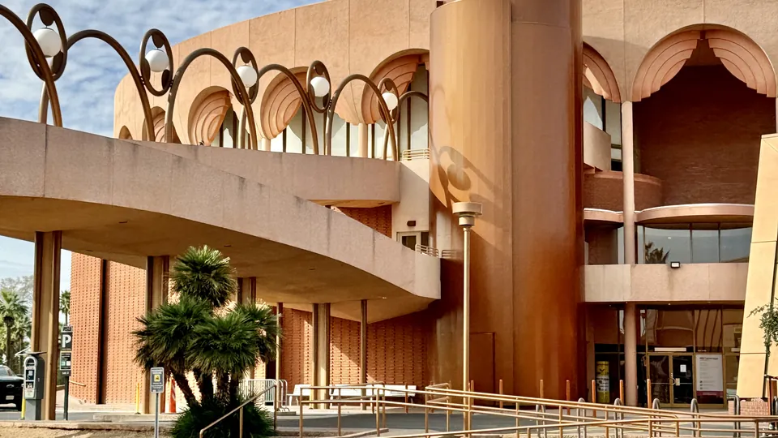
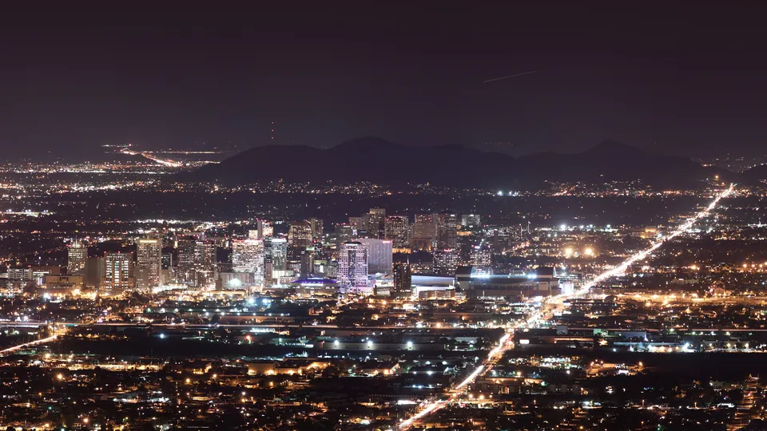
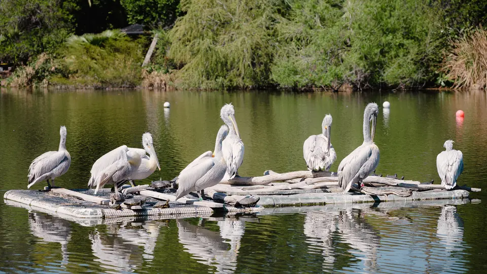
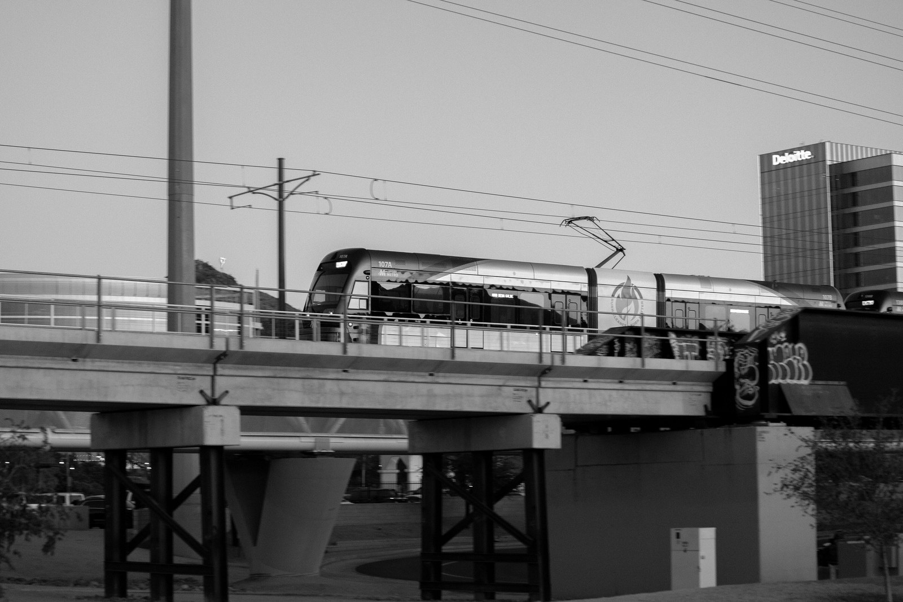

Urban Concierge - Phoenix
Monday Nov 23 – Wednesday Nov 25, 2026 · Snapshot compiled Mon Nov 23, 2026, 5:20 pm MST (Urban Concierge - Phoenix)
- Valley Metro: Baseline/Central Ave park-and-ride parking is limited through December for canopy work (B Line).
- Valley Metro: several bus detours today through Wednesday, including Rt. 106 through early Wed and Rt. 3 and Rt. 83 on Tuesday.
- Valley Metro: Phoenix transit-center customer service windows closed Thanksgiving Day.
What's on

Mon Nov 23, 7:30–9:30 pm MST
The Glory of the Organ (ASU Wind Symphony and Wind Ensemble)
ASU Gammage, 1200 S Forest Ave, Tempe.
Details →

Wed Nov 25, 7:30 pm (doors 6:30 pm)
Dead Hot Workshop with Tramps & Thieves and Elvis Before Noon
Crescent Ballroom, 308 N 2nd Ave.
Details →
More in this brief
Where to eat
No Yelp ratings. Descriptions and hours from the restaurants' own pages. Thanksgiving hours were not listed separately unless noted.
The Gladly, 2201 E Camelback Road. Monday–Thursday 11 am–9 pm; Friday 11 am–10 pm; Saturday 4–10 pm; closed Sunday. Reservations recommended, not required. Patio is first come, first served. https://www.thegladly.com/contact
Pizzeria Bianco Heritage Square, 623 E Adams St. Monday–Saturday 11 am–9 pm; closed Sunday. Closed Thanksgiving Day. No reservations and no take-out. https://www.pizzeriabianco.com/pizzeria-bianco-heritage-square
Durant’s Steakhouse, 2611 N Central Ave. Dinner Monday–Thursday 4–9:15 pm; Friday 3:30–10 pm; Saturday–Sunday 4–10 pm. Lunch Friday 11 am–3:30 pm. Guests enter through the kitchen. https://www.durantsaz.com/
Getting around

Waymo: get $10 off your first ride with code JOHN7RDF (referral link). Referral link: Urban Concierge may earn a ride credit. Waymo operates public rides in Metro Phoenix.
Valley Metro light rail: A one-way local bus and light rail trip is $2; streetcar is $1. Local daily maximum $4; weekly maximum $20; monthly maximum $64. First full trips of the day begin between 4:30–5:30 am at end-of-line stations; last full trips begin between 10:50 pm–12:10 am (later trips may not run the full line). Weekdays: every 12 minutes until 7 pm, then every 20 minutes. https://www.valleymetro.org/fares · https://www.valleymetro.org/how-to-ride/hours-service · Alerts: https://valleymetro.org/rider-alerts
Freeways: Check live conditions at https://az511.gov
Where to stay
Downtown Phoenix for Crescent Ballroom; Tempe for ASU Gammage and light rail across Town Lake; the Papago Park area for the Phoenix Zoo. https://www.visitphoenix.com/
Assumptions and refresh
- Public data only. Checked Mon Nov 23, 2026, ~5:15 pm MST: NWS forecast and alerts, Valley Metro alerts API, hours and fare pages, AZ511 homepage, ASU Events, Crescent Ballroom, Phoenix Zoo ZooLights, and the restaurant pages. Nobody was contacted and nothing was signed up for.
- Window is Monday evening through Wednesday, with Thursday Thanksgiving service notes included where official pages already list them. Times are Mountain standard time (Arizona, no daylight saving).
- This is a snapshot. Check official links before you go.
Not verified
- Yelp ratings; reservations; Michelin status (not used).
- ASU Gammage ticket prices for tonight’s concert (not shown on the event page this run).
- Live ADOT incident details (the public AZ511 alerts API required a key this run); only the AZ511 site is linked.
- The Gladly and Durant’s Thanksgiving Day hours (not listed separately on the pages read). Pizzeria Bianco Heritage Square is listed as closed Thanksgiving.
- Valley Metro holiday rail or bus schedule changes beyond the alerts listed above.